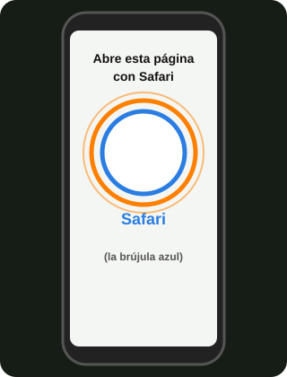
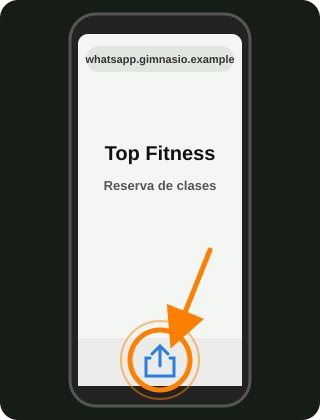
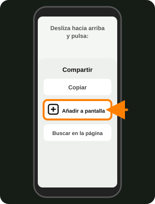
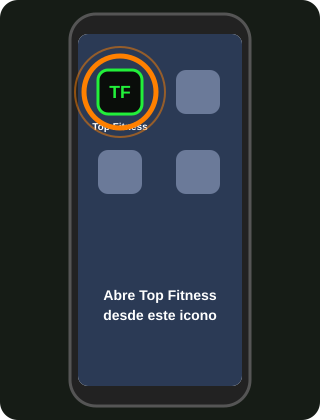
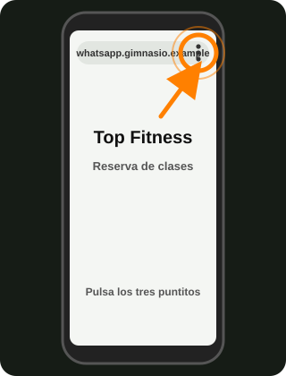
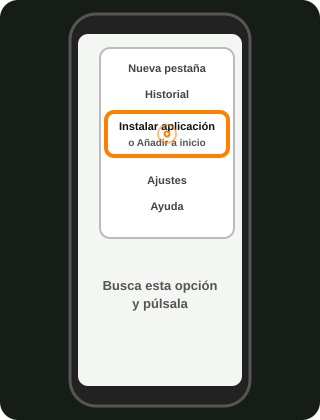
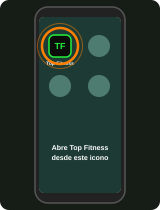
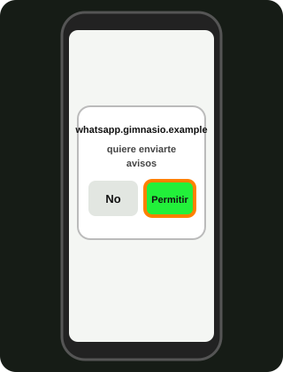

Cómo añadir Top Fitness al móvil
Es solo una vez. Después tendrás un icono en tu pantalla, como cualquier aplicación.
iPhone
Hace falta iOS 16.4 o más nuevo. Tiene que ser con Safari (la brújula azul).

Abre esta página con Safari.

Pulsa Compartir: el cuadrado con una flecha hacia arriba.

Pulsa «Añadir a pantalla de inicio» y después «Añadir».

Abre Top Fitness desde el icono nuevo. Ahí pulsa «Activar avisos».
Android

Abre esta página con Chrome y pulsa los tres puntitos de arriba a la derecha.

Pulsa «Instalar aplicación» o «Añadir a pantalla de inicio».

Abre Top Fitness desde el icono nuevo.

Pulsa «Activar avisos» y, cuando el móvil pregunte, elige «Permitir».
En Android no es obligatorio añadir el icono: puedes activar los avisos directamente desde el navegador.